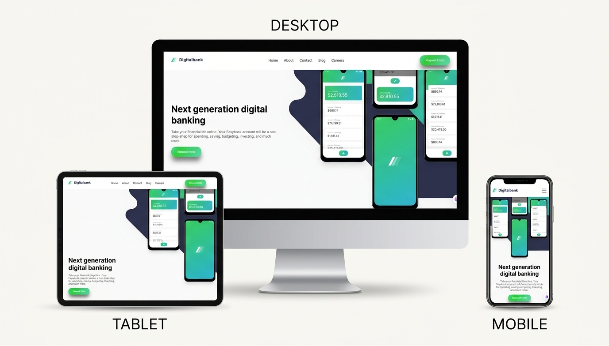
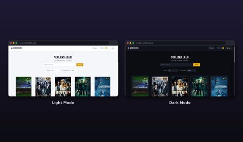

HTML5
Builds complete, well-structured web pages using semantic HTML.
HELLO, I’M
Front-End Developer
Computer Science Student specializing in Data Science
I enjoy turning ideas into clean, responsive, and user-friendly web experiences. With a background in Data Science, I combine creativity, analytical thinking, and problem-solving as I continue growing as a Front-End Developer.
Hi, I’m Retaj Sameh, a Computer Science student at Alexandria University specializing in Data Science.
While Data Science is my academic specialization, I discovered a strong passion for Front-End Development and creating engaging, user-friendly web experiences. This passion has led me to focus on building my front-end skills through self-learning and practical projects.
I’m developing my skills in HTML, CSS, and JavaScript while learning React and TypeScript. Alongside web development, I continue to strengthen my knowledge of Python, SQL, and data analysis through my academic studies and projects.
I’m primarily interested in Front-End Development opportunities where I can contribute to real projects, deliver value, and grow as a developer. I’m also open to suitable opportunities in Data Science and Data Analysis.
Builds complete, well-structured web pages using semantic HTML.
Styles web pages, creates layouts, and applies visual design and responsive styling techniques.
Learning core JavaScript concepts and developing problem-solving skills through practice.
Creates responsive layouts and adapts web interfaces across desktop, tablet, and mobile screen sizes.
Practical experience with Python for data analysis and SQL for querying and retrieving data using joins, aggregations, and subqueries. Additional academic experience with Java and R.
Experience in preparing datasets, performing exploratory data analysis, summarizing findings, and creating visualizations to communicate patterns and insights.
Academic and practical experience applying statistical methods and hypothesis testing in coursework using Minitab, alongside data analysis techniques.
Foundational knowledge of machine learning, with introductory hands-on experience building and evaluating models through academic and personal projects. Data mining is also part of my academic studies, with practical experience still developing.
Familiarity with data analysis environments, database tools, and version control for working on academic and personal projects.
A selection of my front-end work and database design experience, highlighting my practical skills and contributions.

Developed a fully responsive digital banking website independently using HTML5 and CSS3, without JavaScript. Focused on semantic HTML, clean structure, modern CSS layouts, and a consistent user experience across desktop, tablet, and mobile screen sizes.
My contribution: Designed and implemented the website’s front-end structure and styling independently, including responsive layout adjustments and a mobile-friendly navigation layout.
Built from a Frontend Mentor design challenge.

ScreenSeeker is a team-based web development project designed to help users explore and discover movies and TV shows through an organized and user-friendly interface.
My role: Responsive CSS. My contribution focused on implementing responsive CSS, adapting the interface to different screen sizes, and improving the layout across desktop, tablet, and mobile devices.
Designed the Entity-Relationship Diagram (ERD) for a Library Management System, defining the database entities and their relationships as part of the system’s database design.
My contribution: ERD Design
I focus on building responsive web interfaces, improving existing website layouts, and performing basic data analysis. I’m continuously developing my skills through self-learning and practical projects.
Building responsive web pages using HTML and CSS, with attention to semantic structure, clean styling, and layouts that adapt to different screen sizes.
Contact Me about responsive website developmentImproving existing page layouts by fixing CSS issues, adjusting spacing and alignment, and resolving common responsive design problems.
Contact Me about front-end styling and responsive fixesWorking with small datasets using Python and Pandas to clean data, explore patterns, create visualizations, and summarize findings.
Contact Me about basic data analysisComputer Science — Data Science Specialization
Studying Computer Science with a specialization in Data Science, building a foundation in programming, databases, statistics, data analysis, and related computing concepts.
Have a project in mind, an opportunity to discuss, or just want to connect? Feel free to reach out. I’m open to suitable Front-End Development opportunities and selected Data Science or Data Analysis opportunities.
Send Me an Email